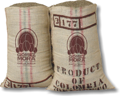
La Esperanza
Familia Restrepo · ladera del volcán
- Altura
- 1 780 m
- Proceso
- Lavado
- Variedad
- Caturra
Panela, mandarina, cacao con leche.
Tostaduría y barra de especialidad
Cultivado en ladera, recogido a mano, tostado cada semana y preparado taza por taza. Lo demás lo pone el lugar: luz, plantas, madera y todo el tiempo del mundo.
Abierto todos los días, 7:30Barrio Centro — a dos calles del parque.
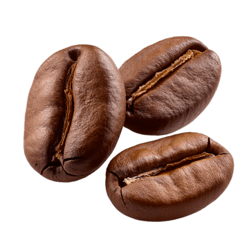
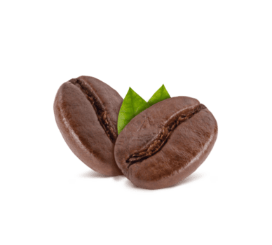
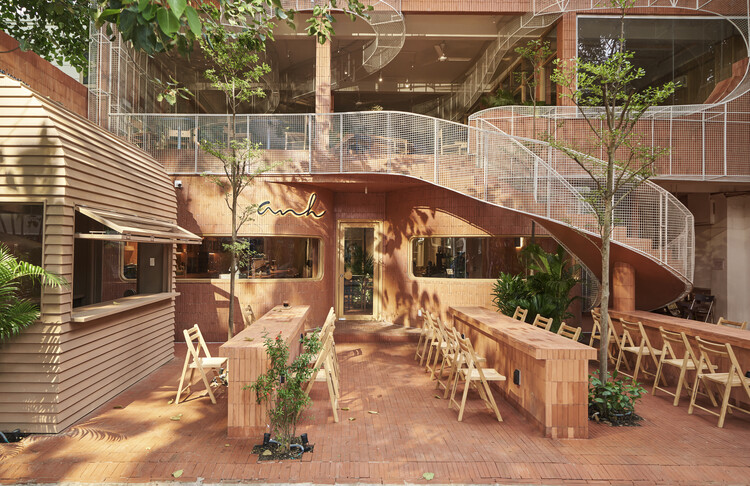
Abrimos todos los días, festivos incluidos.
Orígenes en barra, rotando por temporada.
Máximo del tueste a tu taza. Nunca más.
Altura media de las fincas con las que trabajamos.
No compramos lotes anónimos. Viajamos a la finca, pagamos por encima del precio de mercado y volvemos a la misma cosecha cada año. Esto es lo que hay hoy en barra.

Familia Restrepo · ladera del volcán
Panela, mandarina, cacao con leche.
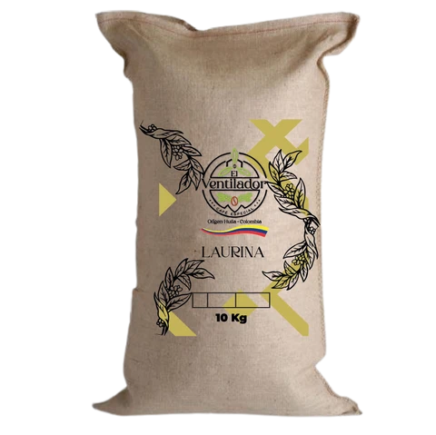
Doña Amparo Ruiz · valle alto
Durazno, miel de caña, nuez.
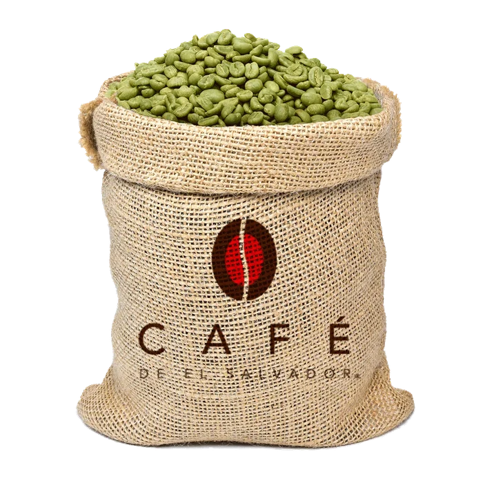
Cooperativa de mujeres · bosque de niebla
Fresa madura, flor de azahar.
Cinco métodos en barra y una sola regla: nada se prepara antes de que lo pidas. Pesamos el café, molemos al momento y controlamos el agua al grado. Si tu taza tarda un minuto de más, es porque ese minuto se nota.

Recogido a mano, grano a grano, sólo cuando la cereza está en su punto. Fincas pequeñas donde quien cosecha decide cuándo hacerlo.
Lotes cortos cada semana, con un perfil por origen: ni tan claro que se esconda, ni tan oscuro que borre la finca. Fecha siempre visible.
Espresso, V60, Chemex, prensa y barra fría. Pregunta por el origen de la semana y te lo preparamos como mejor se exprese.
Por la mañana es la oficina de medio barrio: wifi estable, enchufes donde hacen falta y música baja. Por la tarde cambia de turno y se llena de conversación. Plantas por todas partes, porque el café también es una planta.
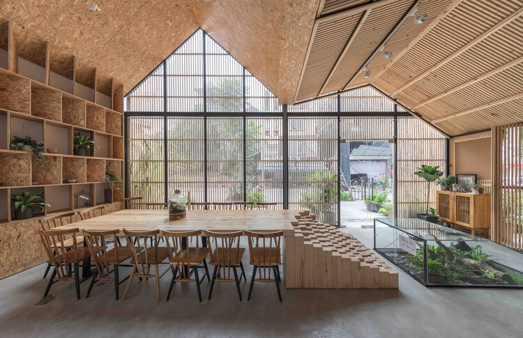
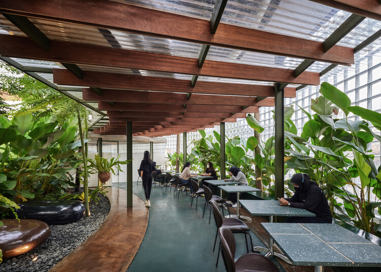
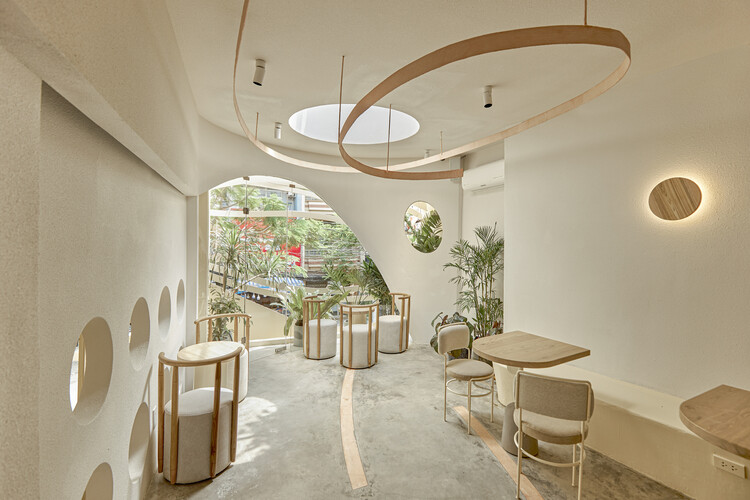
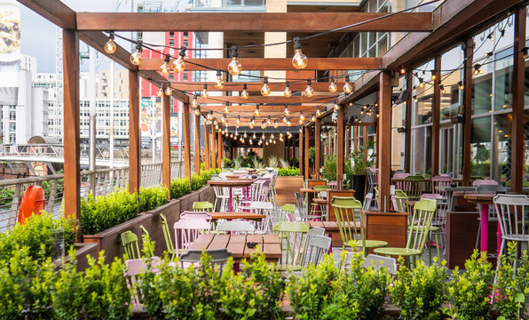
“Vine por el café y me quedé por la mesa junto a la ventana.”
Bolsas de 250 g de cualquiera de los tres orígenes, molidas a tu método delante de ti. Si vuelves con la bolsa de la vez anterior, te descontamos la próxima.
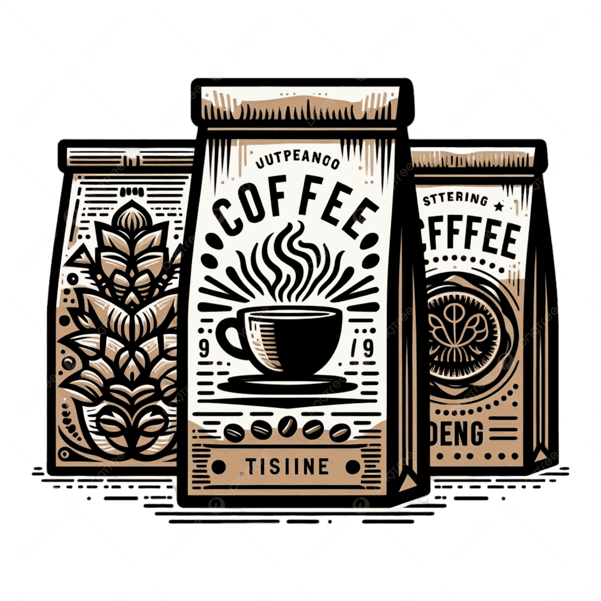
Lunes a viernes7:30 – 20:00
Sábados8:30 – 21:00
Domingos8:30 – 18:00
Calle por confirmar 123, Barrio Centro
hola@cafenativo.com · @cafenativo
Sin reserva para barra y mesas. Para grupos de seis o más, escríbenos y te guardamos la mesa larga.